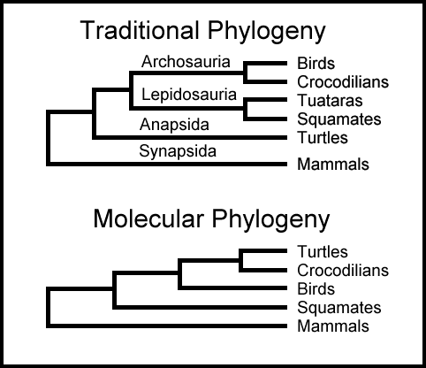

| Feature Article - November 2000 |
| by Do-While Jones |
| The Basics of Biorhythm |
|---|
|
Biorhythm Theory states that each of us is influenced by three biological cycles which begin at birth and continue throughout our lives. The physical cycle is 23 days long and influences physical factors such as eye-hand coordination, strength, endurance, and resistance to disease. The emotional cycle is 28 days long and influences our emotional states, affecting love/hate, optimism/pessimism, passion/coldness, depression/elation. The intellectual cycle is 33 days long and influences our memory, alertness, speed of learning, reasoning ability, accuracy of computation. At the moment of birth, according to Biorhythm Theory, each cycle starts at a zero point and begins to rise in a positive phase during which the energies and abilities are high. (Engineers will recognize the cycles as "sine waves" in their form.) After reaching a positive peak, each cycle then gradually declines, crossing its zero point midway through its period. . . 11 1/2 days for the physical, 14 days for the emotional, and 16 1/2 days for the intellectual. The remainder of each cycle is a negative phase, during which our energies and capabilities are reduced. The most unstable times are the "critical days" in each cycle, when the cycle crosses its zero point, changing from positive to negative or from negative to positive. During these critical days, the abilities vary wildly, from extremely high to extremely low. You may make brilliant discoveries or tragic logical errors on intellectually critical days. You may win the Super Bowl or throw ten interceptions on a physically critical day. You may impulsively propose marriage or impulsively quit your job on emotionally critical days. |
It is unscientific nonsense to structure your life around your biorhythm calendar. But it is important to realize that people who do, can legitimately argue that their belief in biorhythms does have a scientific basis. The entire tampon industry is based on "the fact of biological rhythms."
In criticizing the theory of biorhythms, we run the risk of being called ignorant idiots who don't believe in the menstrual cycle. The menstrual cycle is a well-documented fact, and its connection with emotional temperament has been well established. To reject biorhythms, some might say, is to totally ignore science.
Many incorrect conclusions are based on true foundations. Biorhythm calculators and the theory of evolution are two examples. We don't want to spend too much time debunking biorhythms. That isn't our goal. But we do need to show how the "logic" behind the development of the biorhythm theory is similar to the "logic" behind the theory of evolution, and why both are incorrect.
Some might argue that just because we can't really prove those other two biological cycles exist, doesn't mean that they don't exist. We can deduce their existence, even if we can't actually observe them. Inference, they might argue, is an equally valid means for determining truth.
Evolution starts with the undeniable fact that the average characteristics of some species can change noticeably over several generations, and uses that observation to argue that these changes can continue without limit. Evolutionists admit that we have never observed any fish changing into an amphibian, but they claim we can deduce that it must have happened. Surely, they say, given enough time, many small changes can add up to big changes. Therefore, they infer macroevolution from microevolution.
In the 19th century, when genetics was not well understood, that was a plausible argument. We now know there are genetic reasons why the amount of evolutionary variation is limited. Those genetic reasons against evolution of entirely new species will remain undeniably true until pigs fly.
We can quite easily disprove this assumption, at least for the one easily observable cycle. An obstetrician never predicts a baby's due date based on the expectant mother's birthday. The question is never, "When were you born?". The question is, "When was your last period?" That's because the average length of the menstrual cycle varies between women. Furthermore, it can be interrupted by disease, pregnancy, or "the pill." Furthermore, since we all eventually get over jet lag, and adjust to daylight savings time, other observable cycles adjust to external conditions, too. The assumption that biological cycles are invariant is false. Therefore, the output of the biorhythm calculator is meaningless.
The underlying assumption, on which evolution absolutely depends, is that natural selection produces genetic variation can continue without limit. Given enough time, a pig could sprout wings and fly. (What's so funny about that? Dinosaurs sprouted wings and flew, didn't they?) If that fundamental assumption is false, then the conclusion that all life evolved from a single ancestor must be false. So let's examine that assumption carefully.
Darwin concluded that those individuals who were best suited to the environment would be more likely to survive long enough to reproduce. This conclusion may or may not be true. There is a growing belief in the scientific community that chance may be more important than fitness when it comes to determining which individuals will survive. The gazelle that wanders by the hiding lion may or may not be the slowest one in the herd. Perhaps death stalks the unlucky rather than the unfit.
We don't really care to argue this point. Regardless of whether "survival of the fittest" or "survival of the luckiest" is the most important factor in natural selection, there is no question that "survival of the most desirable" works in artificial selection. Breeders consciously make the decision that only the individuals with the desired characteristics are allowed to breed. So, artificial selection represents the "best case scenario" for natural selection. Artificial selection is the ultimate "survival of the fittest" because nothing is left to chance. Despite this, breeders find that there are limits to how much evolution they can induce in a species. We wrote about this in The Kentucky Derby Limit.
The theory of evolution is based on the false notion that new genes can spontaneously form. For pigs to fly, many new genes (not currently in the pig's gene pool) would have to create themselves. For a bacteria to evolve into a pig, it requires many steps in which new genes appear that give the intermediate critter new characteristics. At least one reptile has to grow breasts and become the first mammal, which would have to evolve into a pig. Mutations can't accidentally produce all the tissues and hormones necessary for functioning nipples. So, it is just as impossible for a pig to evolve from a lower life form as it is for a pig to evolve wings and fly.
For example, if you examine the DNA of a cocker spaniel and a collie, you would expect them to have very similar DNA because they are variations in the dog species. Creationists and evolutionists both agree that all the modern breeds of dog evolved from wild dogs. This is a classic example of microevolution. DNA analysis confirms that all dogs are related.
But when you examine the DNA of critters from different biological classifications, the DNA analysis doesn't always agree with traditional classification. The molecular evidence indicates that creatures did not evolve the way evolutionists say they did. For example, turtle DNA isn't what it should be.
|
The Traditional Phylogeny diagram 1 at the right shows that some unknown common ancestor evolved into mammals and another unknown common ancestor. That second unknown ancestor evolved into turtles and a third unknown ancestor. The third unknown ancestor evolved into the common ancestor of birds and crocodiles and the common ancestor of tuataras and squamates. Turtles evolved early, and have remained unchanged for a long time.
But DNA evidence ("molecular phylogeny") shows a different picture. It shows, for example, that turtles and crocodiles evolved recently from a common ancestor that also had birds for descendants. |
 |
| This study clearly contradicts a sizeable body of morphological evidence, the only contradictory morphological trait shared uniquely by turtles and archosaurs being the presence of dorsal and ventral bony plates. There is no denying that turtles are highly evolved animals; they are the only vertebrates to have their pectoral and pelvic girdles (shoulders and hips) inside their rib cages, a feat of anatomical prestidigitation [magic] that is difficult to fathom. They are also the only living reptile to forego teeth in favor of a horny beak, a trait shared by many extinct dinosaurs and other archosaurs. The study also cast in doubt the relationship between the tuatara and squamates. While fewer gene sequences were available for the tuatara, six of eight comparisons showed closer affinities with archosaurs or turtles, while only two showed squamates as the closest relative. While the results of this study are not conclusive, it clearly demonstrates that we don't know all that we thought we knew about the phylogenetic relationships of living or fossil reptiles. 2 [emphasis supplied] |
| ... genome size is not correlated with the structural complexity of organisms or with the estimated number of genes. Despite much progress in the study of genomes, the C value paradox remains largely unresolved. 3 |
Evolutionists expected that simple, primitive, animals would have simple DNA. More complex animals would have more complex DNA (i.e. a higher "C value"). Allegedly, critters evolved by chance mutations causing new genes and chromosomes to appear. So, chromosome count should be related to evolutionary development.
It isn't too surprising that a worm has 2 chromosomes, and a mosquito has 6. Man has 46 chromosomes, so he is almost as highly evolved as a potato, which has 48. Maybe some day man will evolve into a goldfish (94 chromosomes) or even a shrimp (254 chromosomes). Goldfish and shrimp are similar to the fossils found near the bottom of the geologic column, which evolutionists claim are the most primitive forms of life.
Evolution seemed plausible in the 19th century. There really is some variation in species that can be brought about by breeding. But the extrapolation of that theory to explain the origin of life, and the origin of basic kinds of life forms, is without scientific merit.
| Quick links to | |
|---|---|
| Science Against Evolution Home Page |
Back issues of Disclosure (our newsletter) |
| Web Site of the Month |
Topical Index |
Footnotes:
1
Blanchard, The Cold Blooded News (the newsletter of the Colorado Herpetological Society) Vol 26, #3, March, 1999, "Turtles Move a Notch Up the Ladder"
(Ev)
Blanchard's article is based on: Hedges, S. Blair, and Poling, Laura L. Science, Vol. 283, "A Molecular Phylogeny of Reptiles", pp.998-1001, https://www.science.org/doi/10.1126/science.283.5404.998
(Ev)
2
ibid.
3
Petrov, et al., Science, Vol. 287, 11 February 2000, "Evidence of DNA Loss as a Determinant of Genome Size", pages 1060-1062, https://www.science.org/doi/10.1126/science.287.5455.1060
(Ev)